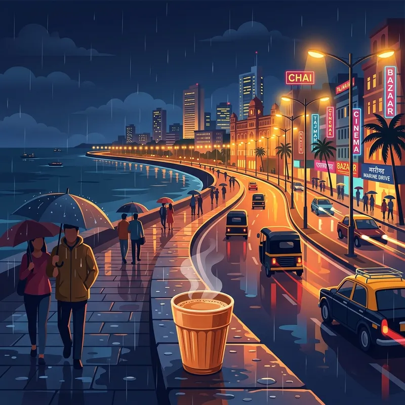

Mumbai Chat Room: Where Bollywood Dreams and Desi Hearts Connect Online

MUMBAI CHAT ROOM – SEO & EMOTIONAL CONTENT COLLECTION
Mumbai Chat Room – Real Mumbai Vibes Online 🇮🇳
Mumbai kabhi sota nahi… aur na hi Mumbai ke log. From late-night Marine Drive talks to local train stories, every Mumbaikar has a unique vibe. IndiaDostiChat brings together people from Mumbai who want friendly conversations, fun chats, and real desi connections online.
Whether you are from Andheri, Dadar, Bandra, Navi Mumbai, Thane, Borivali, or South Bombay — you’ll instantly feel at home here.
Mumbai Style Conversations
“Kaay mhantay Mumbai?” 😄
“Scene kya hai?”
“Cutting chai pe discussion kare?” ☕
“Aaj local train ne phir late kar diya!” 🚆
Our Mumbai chat community feels natural because people can talk in Hindi, Marathi, English, or full Mumbai Hinglish without judgment.
Why Mumbai Users Love IndiaDostiChat
- Fast and lightweight chat experience
- Anonymous nickname-based chatting
- Meet people from Mumbai and across India
- Friendly desi atmosphere
- Mobile-friendly chat room
- Late-night active users
- Bollywood, cricket, food, and Mumbai memes discussions
Feel the Real Mumbai Connection
Mumbai is not just a city — it’s an emotion.
From Ganpati celebrations to midnight street food cravings, from dreams to struggles, every Mumbaikar has stories worth sharing.
“Apun yahan sirf chat nahi karte… dosti banate hai.” ❤️
Join IndiaDostiChat Mumbai today and connect with real people who understand the spirit of Maximum City.
Mumbai Chat Room – Where Mumbai Hearts Connect ❤️
Mumbai is not just a city.
It is a feeling carried by millions of people every single day.
Some are returning home tired in crowded local trains…
Some are sitting alone near Marine Drive watching the waves silently…
Some are working night shifts with chai beside them…
And some are simply looking for one genuine conversation after a long day.
IndiaDostiChat Mumbai is made for those people.
Here, strangers slowly become familiar names.
Late-night talks become memories.
And simple “hello” messages sometimes heal lonely hearts.
The Real Spirit of Mumbai Lives Here
“Kaay mhantay?”
“Bhau scene kya hai?”
“Cutting chai pe baat kare?” ☕
“Local train ne aaj phir jaan leli…” 🚆
Only a Mumbaikar truly understands another Mumbaikar.
The fast life…
The dreams…
The struggles hidden behind smiles…
The feeling of standing alone in a crowd of millions.
That is why this Mumbai chat room feels different.
Mumbai Never Sleeps… Neither Do Conversations Here 🌃
At 2 AM, when the city becomes quieter…
people come online to share thoughts they cannot tell anyone else.
Some talk about:
- Love
- Life struggles
- Career pressure
- Bollywood gossip
- Cricket
- Rain memories
- Friendships
- Heartbreaks
- Dreams they never gave up on
And sometimes… people simply stay online because they do not want to feel alone.
Mumbai Chat Room – Where Bollywood Dreams Meet Real Conversations 🎬❤️
Mumbai…
The city where millions arrive carrying dreams in their eyes.
Some come to become actors.
Some musicians.
Some writers.
Some simply come searching for a better life.
And somewhere between crowded local trains, rainy streets, late-night chai stalls, and glowing city lights… people search for connection.
IndiaDostiChat Mumbai is built for those hearts.
Bollywood Lives In Every Corner Of Mumbai 🎥
In Mumbai, Bollywood is not only cinema.
It is part of life.
People fall in love like old romantic movies.
Friendships feel like emotional film scenes.
Heartbreaks happen while listening to sad songs during monsoon nights.
“Palat… palat…” 😄
“Ek cutting chai aur ek filmy conversation.” ☕
“Yeh Mumbai hai mere dost… yahan sapne bhi bhaagte hai.”
From Bandra streets to Marine Drive…
from Juhu beaches to Film City dreams…
every place carries memories of cinema and emotions.
Mumbai Rain + Old Songs + Late Night Chats 🌧️🎶
There is something magical about Mumbai nights.
Rain outside.
Earphones playing emotional Bollywood songs.
City lights reflecting on wet roads.
And a stranger online asking:
“Kaise ho?”
Sometimes that small question feels more comforting than anything else.
Join The Most Emotional Mumbai Chat Community 🇮🇳
If Bollywood songs make you emotional…
If Mumbai rains remind you of memories…
If you believe conversations can still feel genuine…
Then IndiaDostiChat Mumbai is waiting for you.
Because in the city of dreams…
sometimes strangers become the most unforgettable part of the story. ❤️
No registration required • 100% Free • Join in 5 seconds
Frequently Asked Questions
Is there a dedicated chat room for Mumbai residents?
Yes! Mumbaikars and those who love Mumbai culture gather in our main chat rooms, which act as a centralized, highly active hub for users from Mumbai, Delhi, Bangalore, and across India.
Do I need to sign up or download an app?
No registration is needed. You can join the conversation using just a nickname, keeping your experience fast, secure, and private.
Can I chat in Marathi or Hinglish?
Absolutely. We encourage cultural expression. People talk in Hindi, Marathi, English, or full Mumbai Hinglish without judgment.
Is the chat active late at night?
Yes. Since Mumbai is the city that never sleeps, our chat room is highly active during late-night hours with users sharing late-night vibes, music, and deep thoughts.